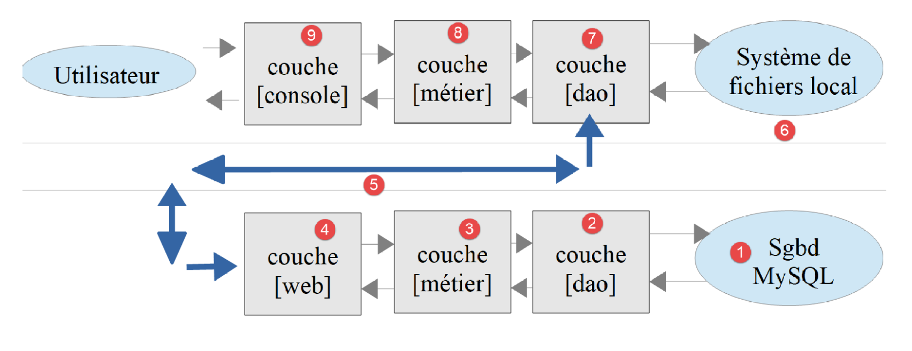

1. Introducción al lenguaje PHP 7
El PDF de este documento está disponible |AQUÍ|.
Los ejemplos de este documento están disponibles |AQUÍ|.
Este documento forma parte de una serie de cuatro artículos:
- [Introducción al lenguaje PHP7 a través de ejemplos (2019)]. Este es el documento actual;
- [Introducción al lenguaje ECMAScript 6 a través de ejemplos (2019)];
- [Introducción al marco VUE.JS a través de ejemplos (2019)];
- [Introducción al marco NUXT.JS a través de ejemplos (2019)];
Todos ellos son documentos para principiantes. Los artículos siguen una secuencia lógica, pero están poco relacionados entre sí:
- el documento [1] presenta el lenguaje PHP 7. El lector que solo esté interesado en el lenguaje PHP y no en el lenguaje Javascript de los artículos siguientes se detendrá aquí;
- los documentos [2-4] tienen como objetivo crear un cliente Javascript para el servidor de cálculo de impuestos desarrollado en el documento [1];
- los marcos Javascript, [vue.js] y [nuxt.js] de los artículos 3 y 4 requieren conocer el Javascript de las últimas versiones deECMASCRIPT, las de la version 6. Por lo tanto, el documento [2] está destinado a quienes no conocen este version de Javascript. Hace referencia al servidor de cálculo de impuestos creado en el documento [1]. El lector de [2] necesitará, por tanto, consultar en ocasiones el documento [1];
- una vez dominado ECMASCRIPT 6, se puede abordar el marco VUE.JS, que permite crear clients y Javascript que se ejecutan en un navegador en modo SPA (aplicación de página única). Se trata del documento [3]. Hace referencia tanto al servidor de cálculo de impuestos creado en el documento [1] como al código del cliente Javascript autónomo creado en [2]. El lector de [3] necesitará entonces, en ocasiones, consultar los documentos [1] y [2];
- una vez dominado VUE.JS, se puede abordar el marco NUXT.JS, que permite crear clients y Javascript que se ejecutan en un navegador en modo SSR (renderizado del lado del servidor). Hace referencia tanto al servidor de cálculo de impuestos integrado en el documento [1], al código del cliente Javascript autónomo creado en [2], así como a la aplicación [vue.js] desarrollada en el documento [3]. El lector de [4] necesitará, en ocasiones, consultar los documentos [1], [2] y [3];
Este documento ofrece una lista de scripts de consola PHP 7 en diferentes ámbitos (estructuras del lenguaje, acceso a archivos, a bases de datos y a la red de Internet). La programación web se aborda a través de servicios web. En este documento, se denomina «servicio web» a cualquier aplicación web que genere texto sin formato. Se trata de servidores de datos y no de servidores de páginas web, que son una combinación de HTML, CSS y Javascript. Se abordan conceptos web clásicos (protocolo HTTP, respuestas jSON o XML, gestión de sesiones, autenticación) que también se utilizan en la programación web clásica.
Hoy en día, es habitual crear aplicaciones web en modo cliente/servidor:

- en [1], el navegador web muestra páginas web destinadas a un usuario [5, 7]. Estas páginas contienen Javascript que implementa un cliente de un servicio web de datos [2], así como un cliente de un servidor de fragmentos de páginas web [3]. Un marco JS bien establecido en este ámbito es Angular 2 de Google (mayo de 2019);
- en [2], el servidor web es un servidor de datos. Puede estar escrito en cualquier lenguaje. No genera páginas web en el sentido clásico (HTML, CSS, Javascript), salvo quizá la primera vez. Pero esta primera página se puede obtener de un servidor web clásico [3] (no un servidor de datos). El Javascript de la página inicial generará entonces las diferentes páginas web de la aplicación obteniendo los datos [4] que se van a mostrar del servidor web que actúa como un servidor de datos [2]. También puede obtener fragmentos de página web [5] para presentar estos datos en el servidor de páginas web [3];
- en [4], el usuario inicia una acción;
- en [6,7]: recibe datos maquetados mediante un fragmento de página web;
En este documento vamos a escribir aplicaciones cliente/servidor en PHP7 con la siguiente estructura:

Se trata de una aplicación cliente/servidor escrita en PHP. Un script de consola [9] consultará un servidor de datos [4]. Lo que se aprenda aquí para escribir el servicio de datos se podrá reutilizar en una aplicación web. El servicio de datos en PHP se podrá conservar y el cliente PHP se sustituirá por un cliente Javascript.
Como hilo conductor del documento, construiremos un servicio de cálculo de impuestos en 13 versiones. El version 13 tendrá la siguiente arquitectura:

La capa [web] del servidor tendrá una arquitectura MVC (Modelo – Vista – Controlador). Todo el curso PHP 7 tiene como objetivo construir este version.
Los scripts de este documento están comentados y se reproduce su ejecución en la consola. En ocasiones se proporcionan explicaciones adicionales. El documento requiere una lectura activa: para comprender un script, es necesario leer tanto su código como sus comentarios y los resultados de su ejecución.
Serge Tahé, julio de 2019